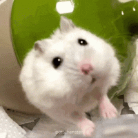

발이 다섯개!!!!
코가손해병님의 은밀기동수납형포신ㄷㄷ
개드립에 버려야지
시발 지금까지 올라온 코끼리 자지짤중에 제일 디테일하네
내꺼 함 꺼내봐??
개붕이들 깜짝 놀랄텐데
여자보다 작은건 좀 놀랍긴 하네
쥐젓인가
요즘은 클리도 포경하나
메카닉같은 느낌도 들고..
저러다가 실수로 지 야추 밟으면 터지는거 아님?
코끼리 자지는 자유자재로 움직임이 가능하다 덜렁거리는 고깃덩어리가 아님
자유자재로 움직이는 고깃덩이군...
헉 코끼리 아저씨는 코가 손이래 사실 코가 아니였던것 ㄷㄷ
찬물 뿌리면 쏙 들어가나
게이 코끼리들은 번갈아가며 저기에 박으면 되겠는데 ㅋㅋㅋㅋ
나도 수납형인데
수납형 자지 간지나지않냐
어.. 최근에 수납되는 가슴은 본 적 있는데..
마치 내 고추같구만
코끼리 다큐 이런거 보면서도 몰랐는데 저 코끼리가 유난한거임?? 다리가 여섯개네 ㅋㅋㅋㅋ
동물 야추 가리는데 돈 시간 존내 많이 든다던데 ㅋ
아 그랬구나 어쩐지 본 기억이 없어 ㅋㅋㅋㅋ
수납되면 봇이 아님?


최근에 말부터해서 왜이러는거임
와 아직 내가 못본것들이 많구나 ㅅㅂ
왜 지금까지 본 적 없냐면 사실 동물 다큐는 저거 CG로 지울 때 많음 ㅋㅋㅋ
코끼리 뿐만 아니라 동물들 워낙 거대한... 녀석들이 많아서 CG팀이 열일함...
코끼리아저씨는 손이 ㅈ이래
살다살다


와 진짜 존나크다 진짜 와................

고추쏙들어가는데 브금이 뭐이리 긴박해 ㅋㅋㅋㅋㅋㅋ
노포였네
ㅋㅋㅋㅋㅋㅋㅋㅋㅋㅋㅋㅋㅋ 비장한 음악
싱가폴 나이트사파리 가서 진짜 충격먹었다..
웬 호스로 물을 틀고 있나 했는데 세상에나
살다살다 시벌거